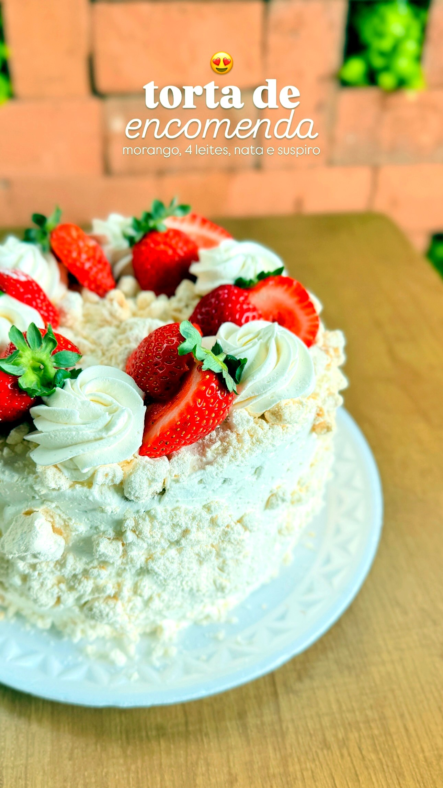
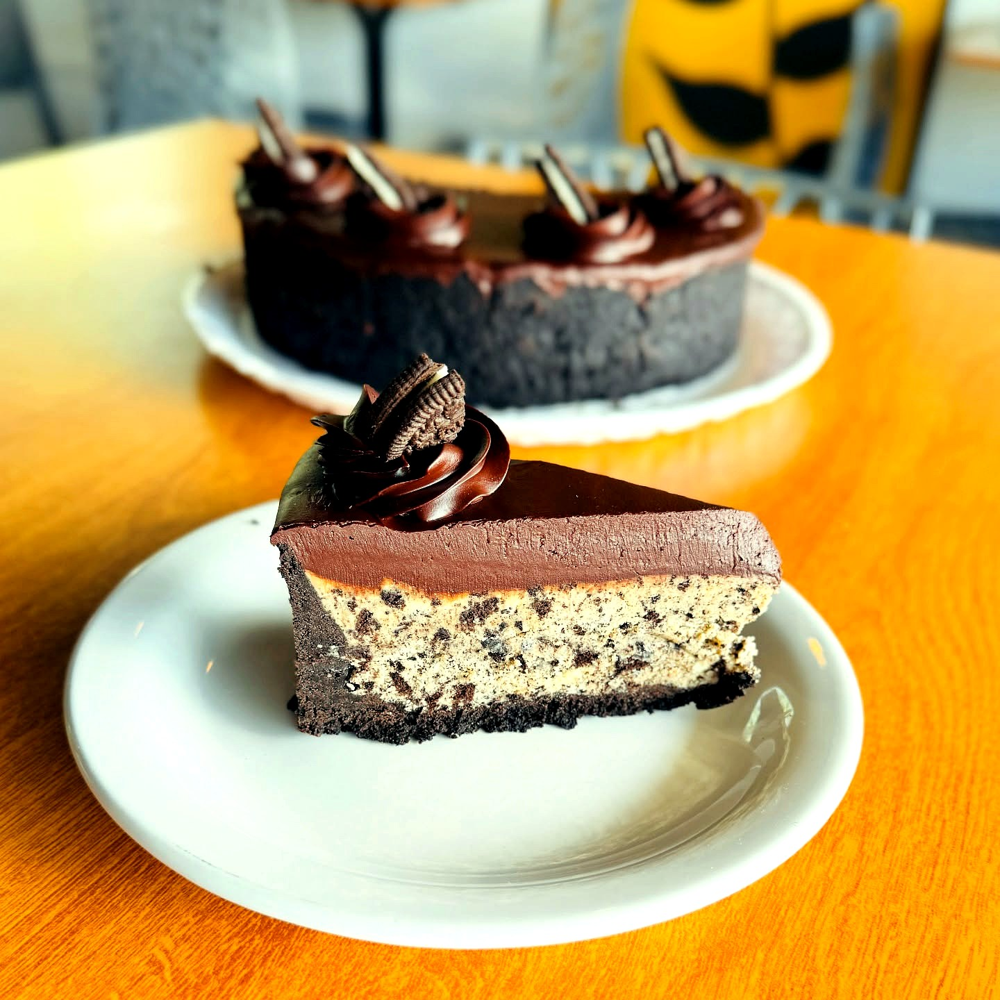
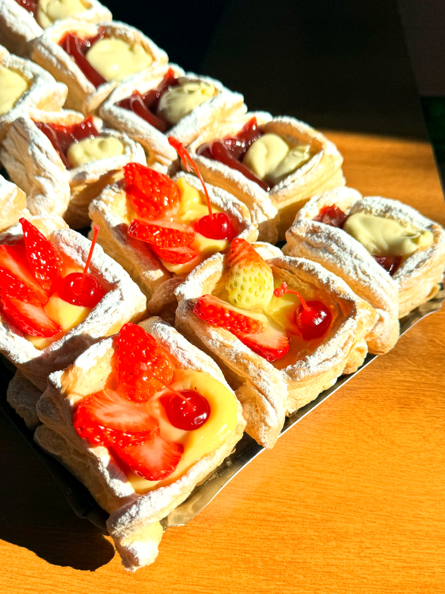
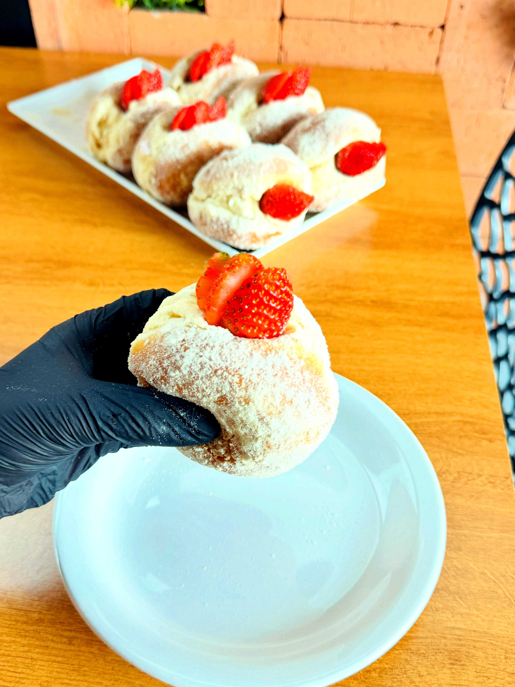
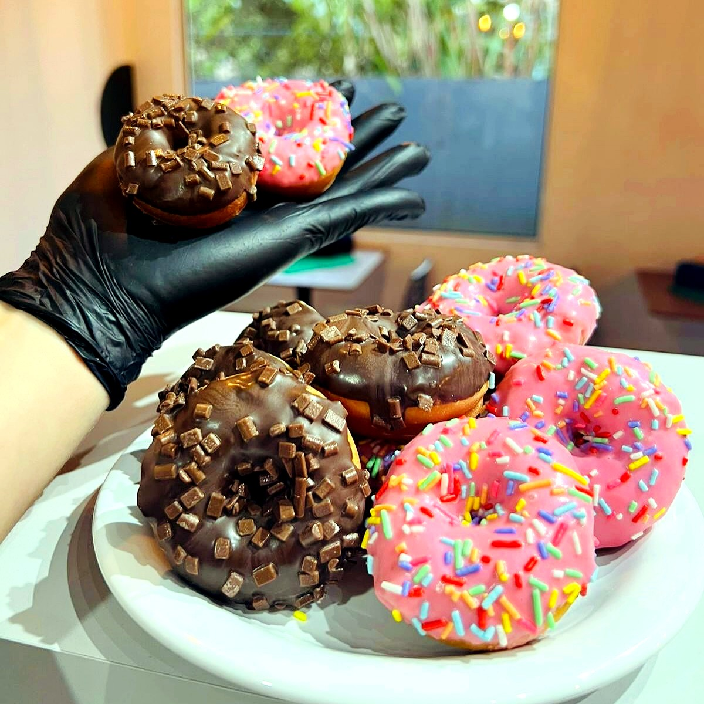
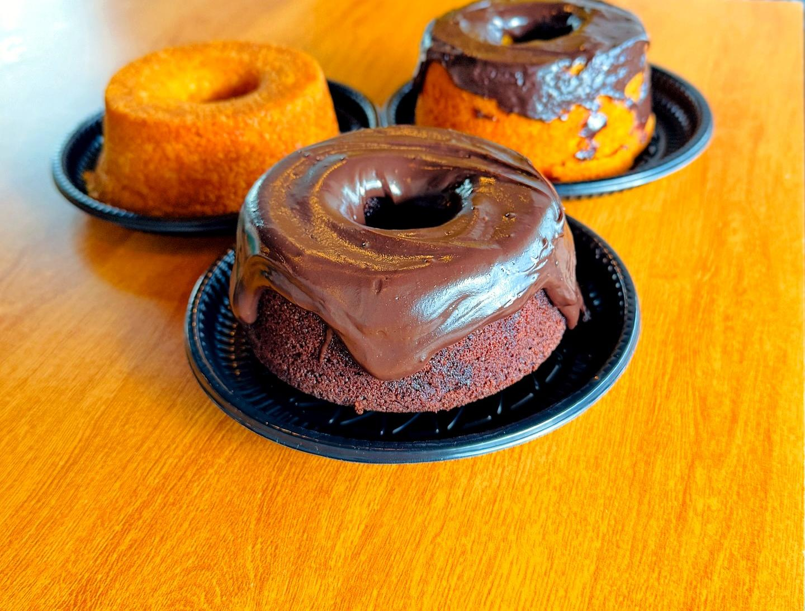
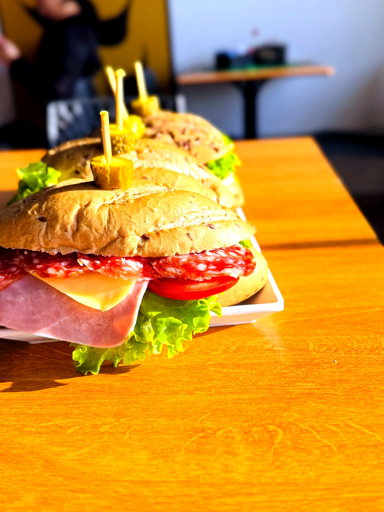

Tapera da Base · Florianópolis
Padaria Passarinho
Pão, bolo e doce de confeitaria, feitos à mão todo dia na Tapera. Peça pelo WhatsApp e retire fresquinho no balcão.
“Nota 4,9 em 220 avaliações. Uma padaria de bairro que o bairro faz questão de defender.”
A Coleção · Bolos por encomenda
Tortas artesanais
Todas montadas sob encomenda, a partir de R$ 79,90/kg. Peça com ao menos 2 dias de antecedência.

A mais pedida
Torta da Casa
Morango, nata e quatro leites

Floresta Negra
Chocolate, chantilly e cerejas
Creme 4 leites, abacaxi e coco ralado 79,90/kg
Brigadeiro branco e meio amargo 79,90/kg
Chocolate preto com morango 79,90/kg
Baba de moça, nozes, damasco e nata 79,90/kg
Vitrine · Doces & sobremesas
Feitas no capricho

Banoffee
Doce de leite, banana, chantilly

Cheesecake
Chocolate e Oreo

Carolinas
Recheadas na hora

Folhadinhos
Creme e fruta fresca
Também: bombom de morango e de uva verde, pudim da casa e mousse de maracujá ou limão. Pergunte o que tem hoje
Saem do forno o dia todo
Sonhos, donuts
& caseirinhos
Sonho de morango recheado, donuts do dia e o bolo caseirinho polvilhado, quentinho. O tipo de doce que não espera encomenda — chegou, provou.
Reservar uma fornada →


Montado na hora · balcão
Lanches naturais
Pão de grãos, croissant amanteigado ou wrap, recheio montado na hora e salada fresca. Para levar ou comer ali mesmo, com um café.
Pedir um lanche →



Do tamanho da comemoração
Mini cakes
O bolo individual, embalado com laço, para celebrar um momento com quem importa. Escolha o sabor e a cor da fita — a gente entrega pronto para presentear.
Encomendar um mini cake →Como funciona
Quatro passos até a mesa
Chama no WhatsApp
Diz o sabor, o tamanho em kg e a data. A gente confirma tudo por lá.
Peça com antecedência
Bolos e tortas com no mínimo dois dias. Sabor personalizado, sob consulta.
Reserve com o sinal
O pedido fica reservado com 50% de sinal. O restante, na retirada.
Retire fresquinho
Combinamos dia e hora. Sai do balcão direto para a sua mesa.
A Casa · Tapera da Base
Um cantinho para
ficar e voltar
Ambiente climatizado, café na xícara e pão saindo do forno o tempo todo. Ponto de parada de ciclista, mesa de aniversário improvisada, cara conhecida atrás do balcão.
Nossa história
Começou com duas mãos
e um forno
A Passarinho nasceu da vontade de levar para o bairro o gosto de comida feita em casa. Duas fundadoras, receitas de família e a teimosia de fazer tudo à mão, todo dia.
Hoje a vitrine tem bolo, torta, caseirinho e lanche. O jeito continua o mesmo: ingrediente de verdade, ponto certo e o cheiro que toma conta da rua quando o forno abre.
Onde nos encontrar
Passa aqui
R. José Olímpio da Silva, 108
Tapera da Base, Florianópolis · SC
Segunda a sábado · 5h30 às 20h
Domingo · 5h30 às 12h
WhatsApp (48) 3500-0458
@padaria_passarinho